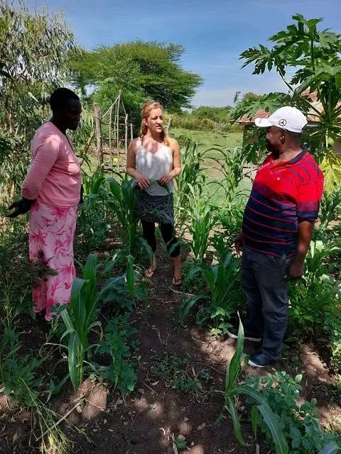

Kenya Women Environmental Protection Unit

KWEPU
Our Projects
Tree Planting
Restoring schools and community landscapes through tree planting and environmental education.
Tree Nursery
Supporting local tree production and increasing access to suitable indigenous and fruit trees.
Agroforestry
Promoting gardens and farming systems that combine food production with environmental restoration.
Schools & Communities
Working with schools and communities to create long-term environmental stewardship.
Our Impact
5,000+
Trees planted at Eddy Memorial School.
4,000+
Trees planted at Kamasengre School.
Since 2019
Community-led environmental action in Rusinga.
Leadership
Meet the dedicated team leading KWEPU and advancing environmental protection, community empowerment and sustainable development.
KWEPU Leadership
Leadership profiles and photographs will be added here.
Gallery
Highlights from KWEPU tree planting, environmental education, school projects and community activities.




Support KWEPU
Your support helps KWEPU expand tree planting, environmental education, agroforestry and community restoration projects.
Contact KWEPU
Rusinga, Homa Bay County, Kenya
We welcome partnerships, support and collaboration for environmental restoration.